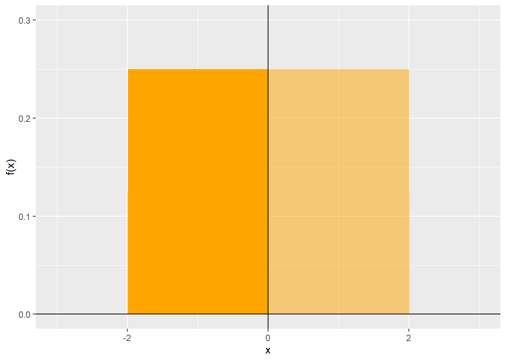

Chapter 3 Fundamental concepts
“Ignorance gives one a large range of probabilities.”
— George Eliot
3.1 Why modelling choices?
In Chapter 2 we discussed in a general fashion the use of models. There, we argued that modelling is an activity that helps us to isolate in a systematic way certain aspects of a process or thing, by way of abstraction and generalization. There are many kinds of models: analog (like sculptures, maquettes, scale models), conceptual (like mental maps), and mathematical/statistical models.
The raw materials of mathematical/statistical models are observations about the process or thing of interest, usually measurements that provide data. The tools are the statistical and mathematical techniques used to convert data into information. And the technical expertise is the knowledge and ability of the modeller to use the appropriate tools to the data, in order to extract as much information as possible, given the characteristics of the data and the process or thing.
Modelling choices is simply a specialized field in the much broader field of mathematical and statistical modelling. The task of modelling choices is in many way similar to modelling limited-dependent and qualitative variables in statistics (Maddala 1983), however it is distinguished from models in that field by strong behavioral foundations. Indeed, where statistical models deal with probabilities of an item of interest being in a certain state, choice modelling deals with the probability of an agent choosing an alternative. This is a subtle but important difference that we will highlight in due course. For the time being, it is sufficient to say that to model choices we need a conceptual model first on which to build the rest of the apparatus required for applied choice modelling.
Before delving into the technical details, we can pause for a philosophical moment to think about human behavior and decision-making. There are different perspectives on human behavior.
Some schools of thought affirm that events are predetermined. A famous thought experiment Laplace’s Demon, is as follows:
We may regard the present state of the universe as the effect of its past and the cause of its future. An intellect [Laplace’s Deman] which at a certain moment would know all forces that set nature in motion, and all positions of all items of which nature is composed, if this intellect were also vast enough to submit these data to analysis, it would embrace in a single formula the movements of the greatest bodies of the universe and those of the tiniest atom; for such an intellect nothing would be uncertain and the future just like the past would be present before its eyes.
— Pierre Simon Laplace, A Philosophical Essay on Probabilities
Some schools of sociological thought (see for example the discussion in Degenne and Fors‚ 1999) see social interactions as a predominant, and even perhaps the determinant factor that affects behavior. In its more extreme form, structuralism views social networks as structures that limit the ability of the individual to exercise independent agency, with the consequence that behavior is completely determined by position within the structure.
Laplace’s Demon and other forms of causal determinism assume that all preceding events set the conditions for present and future events via immutable rules. Nowadays determinism is not seriously considered for several reasons, of which it is useful to highlight two:
- The practical impossibility of knowing at a certain moment all forces that set nature in motion, as well as the positions of all of nature’s items.
With respect to physical processes, the uncertainty principle of quantum physics put paid to the notion that we can know all that there is to know about the fundamental items of nature. In terms of human behavior, this is complicated by the inability of an external observer to know the state of mind of a person who acts. On the other hand, it is possible that existing social structures influence behavior (and there is now a wealth of literature that makes this argument; see Páez and Scott 2007). However, social determinism seems as implausible as physical determinism, for similar reasons: the difficulties of knowing the state of a system with complete omniscience.
- The assumption of immutable rules.
This assumption has been challenged by studies that suggest some important physical constants can change with the age of the universe (Webb et al. 2001). In terms of human behavior, the assumption is even more problematic, if for no other reason that humans can in general act, if they so wish, in a contrarian way simply to demonstrate that there are no immutable social rules. This is only one of many reasons why behavioral detection (for instance, in airports; Kirschenbaum 2013) is problematic: if one knows the rules used for profiling, acting otherwise renders profiling ineffective.
Does this mean that the state of the universe is not determined by the past? Not at all. For all we know, from the perspective of a hypothetical all-knowing being, it is. However, in practical terms, and for the reasons described briefly above, we humble non-all-knowing beigns, cannot rely on determinism for making statements about the state of the universe. In particular, we will make a distinction that is useful as part of developing a conceptual model of choice-making: 1) that there is an observer who typically lacks all relevant information about a choice process (let alone about the state of the universe); and 2) that the rules of decision making are not completely known and/or humans can, for idiosyncratic reasons, alter them at whim.
3.2 How to use this note
Remember that the source for the document you are reading is an R Notebook. Throughout the notes, you will find examples of code in segments of text called chunks. This is an example of a chunk:
## [1] "Hola, Juan de Dios!"If you are working with the Notebook version of the document, you can run the code by clicking the ‘play’ icon on the top right corner of the chunk. If you are reading the web-book version of the document, you will often see that the code has already been executed. You can still try it by copying and pasting into your R or RStudio console.
3.3 Learning objectives
In this practice, you will learn about:
- Choice mechanisms: Utility maximization.
- Probabilities and integration.
- How to derive a simple choice model.
- Other choice mechanisms.
3.4 Suggested readings
- Ben-Akiva, M. Lerman, (1985) Discrete Choice Analysis: Theory and Applications to Travel Demand, Chapter 3, MIT Press.
- Hensher, D.A., Rose, J.M., Greene, W.H (2005) Applied Choice Analysis: A Primer, Chapter 3, Cambridge University Press.
- Louviere, J.J., Hensher, D.A., Swait, J.D. (2000) Stated Choice Methods: Analysis and Application, Chapter 1, Cambridge University Press.
- Ortuzar JD, Willumsen LG (2011) Modelling Transport, Fourth Edition, Chapter 7, John Wiley and Sons.
3.6 Utility maximization
We will begin by defining a conceptual model of choice based on neo-classical economics, fundamentally consumer choice. The conceptual framework in neo-classical economics is based on the concept of utility.
3.6.1 What is utility?
In simple terms, utility is a summary indicator of the pleasure, usefulness, enjoyment, or attractiveness associated with making a choice (for instance, buying a new phone).
We will begin by positing a very simple choice situation, in which a decision maker can make a choice between one of two different alternatives. These alternatives constitute the choice set, and provide the context for the decision-making process. Imagine then that this simple choice example is as follows:
- Alternative 1: Do nothing (keep using current phone)
- Alternative 2: Buy new phone (in reality there are dozens of different phones, but for simplicity we will think at the moment of a generic model).
Further, assume that each alternative can be described by means of a vector of attributes \(X\) as follows: \[ X = [x_1, x_2, \dots, x_k] \]
In other words, the attributes measure important aspects of the thing, as discussed in the preceding chapter. In this case, the attributes describe each alternative in a way that is relevant to the decision maker. In the present example, two relevant attributes are the cost of each alternative and the characteristics of the current and new phones, for instance, their download speeds. In this way, the two choices can be described by their attributes as follows: \[ \begin{array}{cc} \text{Do-Nothing:} & X_A = [\text{cost}_{\text{Do-Nothing}}, \text{ speed}_{\text{Do-Nothing}}]\\ \text{New-Phone:} & X_B = [\text{cost}_{\text{New-Phone}}, \text{ speed}_{\text{New-Phone}}]\\ \end{array} \] If the decision-maker currently owns a phone that is fully paid, the out-of-pocket cost of doing nothing would presumably be zero. Buying a new phone, on the other hand, would have a positive (and possibly substantial) cost. The new phone, on the other hand is faster than the older, currently owned model.
The decision-maker can likewise be described by a vector of attributes, say \(Z\): \[ Z = [z_1, z_2, \dots, z_k] \] Suppose for example, that decision-maker \(i\) can be described in terms of their income, as follows: \[ Z_i = [\text{income}_i] \] The attributes of the decision maker help to capture heterogeneities in behavior: for instance, a decision-maker with a lower income may be more sensitive to cost, since buying a new phone is relatively more expensive.
A utility function is a way of summarizing the attributes of the choices and the attributes of the decision-makers in a single quantity, which is what the decision-maker is trying to maximize. We assume that each course of action gives this consumer a level of utility: in other words, he will be more or less happy with each alternative, taking into account their characteristics and his own condition or status: \[ \begin{array}{c} U_{i, \text{Do-Nothing}} = U(\text{cost}_{\text{Do-Nothing}}, \text{ speed}_{\text{Do-Nothing}}, \text{ income}_i)\\ U_{i, \text{New-Phone}} = U(\text{cost}_{\text{New-Phone}}, \text{ speed}_{\text{New-Phone}}, \text{ income}_i)\\ \end{array} \]
Notice that a utility function is specific to a decision maker \(i\) and an alternative.
Here we define a decision-making rule. The decision-maker considers the utility of the alternatives, and chooses the one that gives the highest utility. In other words decision-maker \(i\) will choose to keep the current phone if: \[ U_{i,\text{Do-Nothing}} > U_{i,\text{New-Phone}}, \] If the reverse is true, then the decision-maker will choose to buy a new phone (in the case of a tie, the decision-maker is indifferent between the two alternatives).
We assume that decision-makers are rational and that they do an analysis of the costs and benefits associated with each alternative before making the choice. The analyst, however, may fail to observe all aspects of the decision making process. For instance, a decision-maker may need faster speeds because she lacks internet at home. Or younger people may be more willing to buy new phones than older people. Or a decision-maker may have just received a large gift from a relative. The analyst may observe a decision-maker with a relatively low income buying a new phone. While income alone would have suggested that the decision-maker would be better off keeping the old phone, the analyst has no way of knowing the idiosyncratic factor of the gift.
For this reason, it is convenient to decompose the utility into 1) a systematic component, that is, the part that explains the decision-makers’ response to the attributes of the alternative; and 2) a random component, which captures other aspects of the decision making process that the analyst did not observe: \[ \begin{array}{c} U_A = V_A + \epsilon_A\\ U_B = V_B + \epsilon_B\\ \end{array} \]
The random part of the function is called the random utility. If there was no uncertainty at all, if we knew precisely all there is to know about the decision-making process, we would have no \(\epsilon_{\text{Do-Nothing}}\) and \(\epsilon_{\text{New-Phone}}\). Accordingly, \(U_{\text{Do-Nothing}} = V_{\text{Do-Nothing}}\) and \(U_{\text{New-Phone}} = V_{\text{New-Phone}}\), and we could predict with complete certainty the choice. However, the presence of the random components means that we cannot be certain whether \(U_A > U_B\).
While this is unfortunate, the presence of the random terms does allow us to make a probabilistic statement, such as: \[ P_{\text{Do-Nothing}} = P(U_{\text{Do-Nothing}} > U_{\text{New-Phone}}) \]
In other words, the probability of doing nothing equals the probability that the utility of doing nothing is greater than the utility of buying a new phone. After rearranging things, this is equivalent to: \[ P_{\text{Do-Nothing}} = P(V_{\text{Do-Nothing}} - V_{\text{New-Phone}} > \epsilon_{\text{New-Phone}} - \epsilon_{\text{Do-Nothing}}) \]
The expression above is the foundation of random utility modelling. Before we make more progress, however, we have to answer an important question.
3.7 What about those random terms?
A probabilistic expression is clearly better than being unable to say anything interesting at all regarding choices. To make this expression of practical use, we must make some assumptions about the random terms, in particular what is their distribution. Which means that we need to define some probability distribution function.
3.8 Probability distribution functions (PDFs)
Probability distribution functions are mathematical constructs that are useful to describe random processes. A candidate for a probability distribution function is any function that satisfies the following two conditions: \[ \begin{array}{l} \text{Condition 1: }f(x)\ge 0\text{ for all }x\\ \text{Condition 2: }\int_{-\infty}^{\infty}f(x)dx=1\\ \end{array} \]
These two conditions say that the function must take values of at least zero for the interval of \(x\) of interest, and that the area under the curve (that is what the integral means) must equal 1.
Lets use an example to illustrate these properties. We will define the following function: \[ f(x) = \left\{ \begin{array}{lc} 0 & \quad x \le -L \\ \frac{1}{2L} & \quad -L> x > L \\ 0 & \quad x \ge L \\ \end{array} \right. \]
This function is shown in Figure 3.1 below, with \(L=2\):
# Define a function
uniform <- function(x, L)
ifelse( x <= -L, 0,
ifelse( x > -L & x <= L, 1/(2 * L), 0 ))
# Define parameter L for the distribution
L <- 2
# Create a data frame for plotting
df <- data.frame(x =seq(from = -(L+1), to = L+1, by = 0.01)) %>% mutate(y = uniform(x, L))
# Plot
ggplot(data = df, aes(x, y)) +
geom_area(fill = "orange", alpha = 0.5) +
ylim(c(0, 1/(2 * L) + 0.2 * 1/(2 * L))) + # Set the limits of the y axis
geom_hline(yintercept = 0) + # Add y axis
geom_vline(xintercept = 0) + # Add x axis
ylab("f(x)") # Label the y axisFigure 3.1: Uniform distribution
It is easy to see that the value of the function is always equal to or greater than zero. You can also verify that the area under the curve in this case is simply the area of the rectangle \(b \times h\), where the base of the rectangle is \(b = L - (-L)\) and the height is \(h=\frac{1}{2L}\):
## [1] 1If you are working with the R Notebook file, try changing the value of the parameter \(L\) to see what happens! What is the implication of larger values of L? And of smaller values of L?
Since the function above satisfies the two necessary conditions, we can conclude that it is a valid probability distribution function. In fact, it turns out to be a form of the uniform probability distribution function, which more generally is defined as: \[ f(x) = \left\{ \begin{array}{lc} 0 & \quad x \le b \\ \frac{1}{a - b} & \quad b> x > a \\ 0 & \quad x \ge a \\ \end{array} \right. \]
Given a probability distribution function, we can calculate the probability of a random variable \(x\) being contained in a defined interval. For instance, the probability of \(x < -L\) is zero, since the area under the curve in that case is zero. The probability of \(x \le X\) is: \[ \int_{-\infty}^{X}f(x)dx \]
In the case of our uniform distribution function, this is simply the area of the rectangle defined by the limits of the integral:
# Define L
L <- 2
# Define an upper limit for calculating the probability
X <- 0
# Create a data frame for plotting
df <- data.frame(x =seq(from = -(L+1), to = L+1, by = 0.01)) %>% mutate(y = uniform(x, L))
df_p <- data.frame(x =seq(from = -(L+1), to = X, by = 0.01)) %>% mutate(y = uniform(x, L))
# Plot
ggplot(data = df, aes(x, y)) +
geom_area(fill = "orange", alpha = 0.5) + # Plot distribution function
geom_area(data = df_p, fill = "orange", alpha = 1) + # Plot area under the curve
ylim(c(0, 1/(2 * L) + 0.2 * 1/(2 * L))) + # Set the limits of the y axis
geom_hline(yintercept = 0) + # Add y axis
geom_vline(xintercept = 0) + # Add x axis
ylab("f(x)") # Label the y axis
What is the probability that \(x \le 0\)? Try changing the upper limit to see what happens. How does the value of the area under the curve change?
Associated to a probability distribution function we can define a cumulative distribution function \(F_X(x) = P(x \le X)\), which maps how the probability changes as we change the interval. The cumulative distribution function of our uniform distribution is as follows: \[ F(x) = \left\{ \begin{array}{lc} 0 & \quad x \le -L \\ \frac{x + L}{2L} & \quad -L> x > L \\ 1 & \quad x \ge L \\ \end{array} \right. \]
The cumulative distribution function for our uniform distribution appears in Figure 3.2:
# Define the cumulative distribution function
cuniform <- function(x, L)
ifelse( x <= -L, 0,
ifelse( x > -L & x <= L, (x + L)/(2 * L), 1 ))
# Define L
L <- 2
# Create a data frame for plotting
df <- data.frame(x =seq(from = -(L+1), to = L+1, by = 0.01)) %>% mutate(y = cuniform(x, L))
# Plot
ggplot(data = df, aes(x, y)) +
geom_step(color = "orange") + # Plot cumulative distribution function
ylim(c(0, 1)) + # Set the limits of the y axis
geom_hline(yintercept = 0) + # Add y axis
geom_vline(xintercept = 0) + # Add x axis
ylab("F(x)") # Label the y axisFigure 3.2: Uniform cumulative distribution function
As you can see, the probability of \(x \le -L\) is zero, the probability of \(x \le 0\) is 0.5, and the probability of \(x \ge L\) is one.
We can consider a second example, with a function as follows: \[ f(x) = \left\{ \begin{array}{lc} 0 & \quad x \le 0 \\ 2x & \quad 0 > x > 1 \\ 0 & \quad x \ge 1 \\ \end{array} \right. \] This function is shown in Figure 3.3.
# Define a function
linear <- function(x)
ifelse( x <= 0, 0,
ifelse( x > 0 & x <= 1, 2 * x, 0 ))
# Create a data frame for plotting
df <- data.frame(x =seq(from = 0, to = 1, by = 0.01)) %>% mutate(y = linear(x))
# Plot
ggplot(data = df, aes(x, y)) +
geom_area(fill = "orange", alpha = 0.5) +
ylim(c(0, 2)) + # Set the limits of the y axis
geom_hline(yintercept = 0) + # Add y axis
geom_vline(xintercept = 0) + # Add x axis
ylab("f(x)") # Label the y axisFigure 3.3: Cubic distribution
Clearly, \(f(x) \ge 0\) for all values of \(x\) in the interval \(0 \le x \le 1\). We can verify that the area under the curve is 1. In this case the area is that of a triangle, i.e., \(\frac{b \times h}{2}\). Since the base of the triange is \(b=1\) and the height is \(h=2\), we see that the area under the curve is 1.
Since this is a valid probability distribution function, we can use it to calculate the probability of \(x \le X\) as above. The area under the curve when \(x \le X\) is given by: \[ F(x) = \left\{ \begin{array}{lc} 0 & \quad x \le 0 \\ \frac{x \times 2x}{2} = x^2 & \quad 0 > x > 1 \\ 1 & \quad x \ge 1 \\ \end{array} \right. \]
The plot of the cumulative distribution function in this case is shown in Figure 3.4.
# Define a function
clinear <- function(x)
ifelse( x <= 0, 0,
ifelse( x > 0 & x <= 1, x^2, 1 ))
# Create a data frame for plotting
df <- data.frame(x =seq(from = -0.2, to = 1.2, by = 0.001)) %>% mutate(y = clinear(x))
# Plot
ggplot(data = df, aes(x, y)) +
geom_step(color = "orange") + # Plot cumulative distribution function
ylim(c(0, 1)) + # Set the limits of the y axis
geom_hline(yintercept = 0) + # Add y axis
geom_vline(xintercept = 0) + # Add x axis
ylab("f(x)") # Label the y axisFigure 3.4: Linear cumulative distribution function
It should be clear from the examples above that calculating probabilities is nothing more than finding the area under the curve of a function. When the function is relatively simple, as the uniform or the linear distributions that we used for the examples, calculating the areas is also straightforward, since the functions describe simple geometric shapes. When the function is more involved, that becomes less straighforward. For example, consider the following function: \[ f(x) = \left\{ \begin{array}{lc} 0 & \quad x \le 0 \\ 4x^3 & \quad 0 > x > 1 \\ 0 & \quad x \ge 0 \\ \end{array} \right. \] This function is plotted in Figure 3.5.
# Define a function
cubic <- function(x)
ifelse( x <= 0, 0,
ifelse( x > 0 & x <= 1, 4 * x^3, 0 ))
# Create a data frame for plotting
df <- data.frame(x =seq(from = 0, to = 1, by = 0.01)) %>% mutate(y = cubic(x))
# Plot
ggplot(data = df, aes(x, y)) +
geom_area(fill = "orange", alpha = 0.5) +
ylim(c(0, 4)) + # Set the limits of the y axis
geom_hline(yintercept = 0) + # Add y axis
geom_vline(xintercept = 0) + # Add x axis
ylab("f(x)") # Label the y axisFigure 3.5: Cubic distribution
Unlike the rectangle of the uniform distribution and the triangle of the linear distribution, the area under the curve for this distribution needs to be obtained by integration as follows (do not worry if ): \[ \int_{0}^{1}4x^3dx =4\Big[\frac{x^4}{4} \Big]_{0}^{1} = \Big[x^4 \Big]_{0}^{1} = 1^4-0 = 1 \] This shows that the function is a valid probability distribution function. However, the integration makes things more interesting, to say the least! Fortunately, for most applied discrete choice analysis we do not need to solve integrals manually (the monster minds have already done this for us!). The key here is to remember: given a valid probability distribution function the probability that a random variable \(x \le X\) is the area under the curve in the interval \(-\infty\) to \(X\).
3.9 A simple random utility discrete choice model
We are now ready to deploy a probability distribution function to the probability of choosing an alternative. Returning to our binary choice example, lets assume that the difference in the random utility terms follows the uniform distribution with parameters \(-L\) and \(L\), that is: \[ \epsilon_{\text{New-Phone}} - \epsilon_{\text{Do-Nothing}} \sim U(-L, L) \]
The probability of choosing the “do-nothing alternative” is: \[ P_{\text{Do-Nothing}} = P(V_{\text{Do-Nothing}} - V_{\text{New-Phone}} > \epsilon_{\text{New-Phone}} - \epsilon_{\text{Do-Nothing}}) \]
Since we know the probabilities of a random variable being less than a certain value in the uniform distribution, we have that: \[ P_{\text{Do-Nothing}} = \left\{ \begin{array}{lc} 0 & \quad V_{\text{Do-Nothing}} - V_{\text{New-Phone}} \le -L \\ \frac{V_{\text{Do-Nothing}} - V_{\text{New-Phone}} + L}{2L} & \quad -L> V_{\text{Do-Nothing}} - V_{\text{New-Phone}} > L \\ 1 & \quad V_{\text{Do-Nothing}} - V_{\text{New-Phone}} \ge L \\ \end{array} \right. \]
We can unpack this expression as follows.
When the systematic utility of a new phone is greater than the systematic utility of doing nothing, the difference between these two terms is negative. The more negative this value is, the lower the probability of doing nothing. When the difference is more negative than \(-L\), the probability of doing nothing becomes zero.
When the systematic utility of a new phone is identical to the systematic utility of doing nothing, the difference between these two terms is zero, in which case the probability of doing nothing is \(0.5\). In other words, there is a 50% chance that the decision maker will do nothing.
Finally, when the systematic utility of a new phone is less than the systematic utility of doing nothing, the difference between these two terms is positive. The more the more positive this value is, the higher the probability of doing nothing. When the difference is greater than \(L\), the probability of doing nothing becomes one.
Now, since the choice set is an exhaustive collection of courses of action, it follows that the probability of the two courses of action must add up to one (the decision-maker does nothing OR buys a new phone): \[ P_{\text{Do-Nothing}} + P_{\text{New-Phone}} = 1 \]
This implies that once we know the probability of doing nothing, the probability of buying a new phone is simply the complement: \[ P_{\text{New-Phone}} = 1 - P_{\text{Do-Nothing}} \]
These probabilities are a discrete choice model. In fact, this is called the linear probability model (see Ben-Akiva and Lerman 1985, 66–68). Other models can be obtained by selecting different probability distribution functions, as we will see in later chapters. The procedure followed here will be the same, even if the probability distribution function selected for the model is different: given a valid probability distribution function, and given the systematic utilities of the alternatives, it is possible to evaluate the probabilistic statement associated with the choice of an alternative.
On a final note, before discussing other choice mechanisms. The simple example used here was a binomial choice choice situation, i.e., a situation with only two alternatives. This was done for convenience of exposition, and we will see how the same ideas generalize for situations with more than two alternatives, that is, for multinomial choice situations.
3.10 Other choice mechanisms
Utility maximization is only one of several plausible mechanisms. The utility functions assume that trade-offs among different attributes are possible; for example, the way the utility functions were formulated assumes that a decision-maker is willing to pay more for higher download speeds. While such trade-offs are plausible in many situations, other choice mechanisms could exist in other cases. Ortuzar and Willumsen (2011, Fourth Edition:241–43).
For example, a user who is shopping for smartphones may have low tolerance for download speeds below a certain threshold, or may have a budget limit that prevents her from considering certain models. Some alternatives from the choice set may be eliminated or ranked based on some dominant attribute. This kind of choice mechanism is called lexicographic choice, or elimination by attributes.
Another plausible choice mechanism is a form of satisficing behavior. Again, a user shopping for a smartphone might find a model that does not maximize her utility, but that is otherwise satisfactory. For example, the decision-maker may consider that the additional time spent finding an even better model is not worth her while, so she stops her search at a suboptimal point.
Another choice mechanism seen recently in the literature is regret-minimization (Chorus 2010).
In addition to these various mechanisms, it is possible that a decision-maker deploys combinations of them: for example, lexicographic choice to reduce the number of alternatives in a choice set, followed by utility maximization or regret minimization. There has been much progress on these models, but for the time being utility maximization remains the most widely used approach for the analysis of discrete choices.
3.11 Exercise
Answer the following questions.
3.11.1 Questions
Define utility.
Describe in your own words the behavior described by utility maximization.
What conditions are necessary for a function to be a valid probability distribution function?
Consider the function shown in Figure 3.6. This is called the triangle or tent function.
Figure 3.6: Triangle (or tent) function
- Show that the triangle function in the figure is a valid probability distribution function.
Next, consider the following utility functions for two alternatives, namely \(i\) and \(j\): \[ \begin{array}{c} U_i = V_i + \epsilon_i\\ U_j = V_j + \epsilon_j\\ \end{array} \]
Assume that the difference between the error terms below follows the triangle distribution: \[ \epsilon_q = \epsilon_i - \epsilon_j \]
- Parting from the assumption above, derive a binary choice model for the probability of selecting alternative \(j\).
References
Ben-Akiva, M., and S. R. Lerman. 1985. Discrete Choice Analysis: Theory and Applications to Travel Demand. Book. Cambridge: The MIT Press.
Chorus, Caspar G. 2010. “A New Model of Random Regret Minimization.” Eurpean Journal of Transport Infrastructure Research 10 (2): 181–96.
Hensher, David A, John M Rose, and William H Greene. 2005. Applied Choice Analysis: A Primer. Cambridge University Press.
Kirschenbaum, Alan (Avi). 2013. “The Cost of Airport Security: The Passenger Dilemma.” Journal of Air Transport Management 30: 39–45. https://doi.org/https://doi.org/10.1016/j.jairtraman.2013.05.002.
Louviere, Jordan J, David A Hensher, and Joffre D Swait. 2000. Stated Choice Methods: Analysis and Applications. Cambridge University Press.
Maddala, G. S. 1983. Limited-Dependent and Qualitative Variables in Econometrics. Book. Cambridge: Cambridge University Press.
Ortúzar, J. D., and L. G. Willumsen. 2011. Modelling Transport. Book. Vol. Fourth Edition. New York: Wiley.